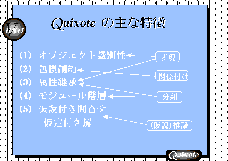

<html>
<head>
<title> Slide No.4 </title>
</head>

<frameset rows="430,130">

<noframes>
<body>
<a href="GIF/slide4.GIF"></a>

<a href="AU/voice4.au">
	</a>[384K]<p>
<!--		-->
<b> Quixote </b> の具体的特徴としては、主に５つ挙げられます。
それは、<a href=""> (1) オブジェクト識別性、(2) 包摂制約、
(3) 属性継承、(4) モジュール階層、(5) 仮説付き問合せと仮定付き解 </a>
です。<p>

この特徴が、どのようなものに役に立つかと申しますと、
(1) と (3) は <a href=""> 効率的な表現 </a> に、
(2) は物事の <a href=""> 関係付け </a> に、
(3) と (4) は、プログラムなどの <a href=""> 分類 </a> に
役立ちます。
また、(5) によって、<b> Quixote </b> は演繹推論ばかりではなく、
<a href=""> 仮説推論 </a> もできることが分かります。<p>

これらを具体的に説明する前に、今回の例題を説明しましょう。
<p>
<!--		-->

<hr>
<a href="slide5.html" target="_top">次の OHP へ</a>
<br><br>
<a href="slide3.html" target="_top">前の OHP へ</a>
<br><br>
<a href="HomePage.html" target="_top">OHP の一覧へ</a>
</body>
</noframes>

<frame src="onlyslide4.html">
<frame src="buttonexpla4.html">

</frameset>

</html>
